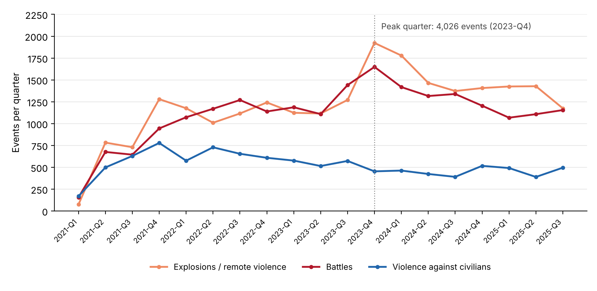
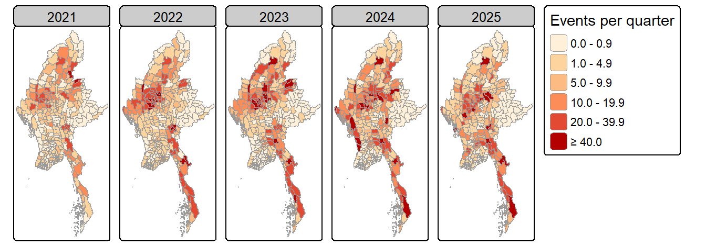
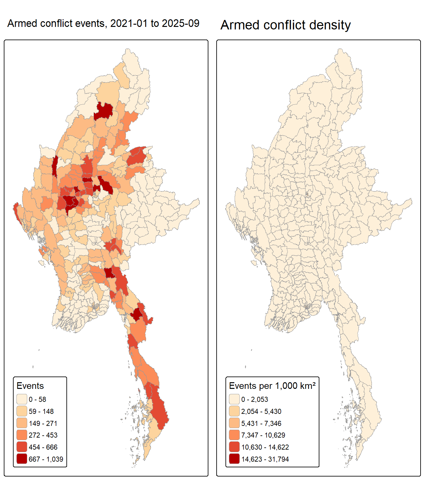
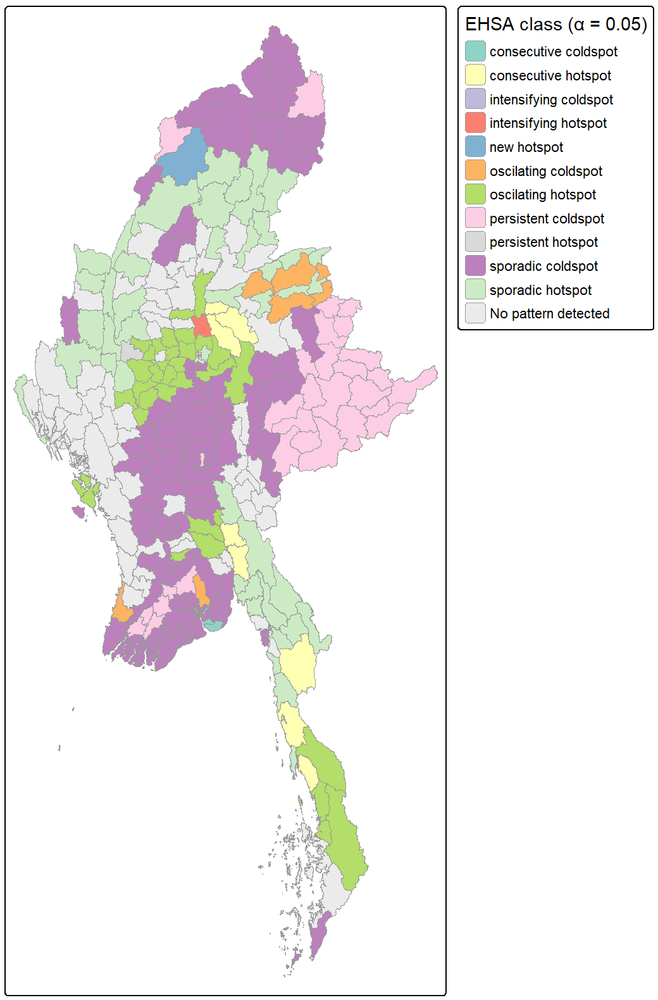

Geospatial Analytics for Peace
Where, and how, armed conflict clusters and evolves across Myanmar’s townships, Jan 2021 – Sep 2025
2026-10-24
Contents
- Research question
- Study area and data
- Analytical approach
- Key findings at a glance
- Conflict over time
- Where conflict concentrates
- Hot spots and clusters (LMSA)
- How hot spots evolve (EHSA)
- Limitations
- Public-safety implications
Bottom line: Myanmar’s post-coup violence is not spread evenly. It is anchored in a Central Dry Zone core (Sagaing–Magway–Mandalay) that keeps re-igniting, with two southern corridors and a new southward frontier in Bago (West) emerging.
1 · Research question
Since the February 2021 coup, Myanmar has slid from protest into nationwide civil war: thousands killed, over three million displaced, and large areas outside junta control.
Main question: Where does armed conflict cluster across Myanmar’s 330 townships, and how have those clusters moved and changed between 2021-Q1 and 2025-Q3?
- Q1 · Spatial (LMSA): which townships are statistically significant hot spots, cold spots or outliers over the whole period?
- Q2 · Spatio-temporal (EHSA): where is violence new, intensifying, persistent, oscillating or cooling?
Why township level? It is the administrative unit at which humanitarian access, aid delivery and local ceasefire arrangements are negotiated.
Why statistics, not just maps? A busy-looking township may simply be large. Local statistics test whether a cluster is stronger than chance would produce.
Audience: peace-building, humanitarian and civilian-protection actors who need to prioritise scarce resources.
2 · Study area and data
330 townships (MIMU v9.4, admin level 3)
19 quarters, 2021-Q1 to 2025-Q3
53,907 armed-conflict events analysed (of 87,109 ACLED records)
89,012 reported fatalities (a lower bound)
6,270 township × quarter cells in the space-time cube
| Dataset | Use |
|---|---|
| ACLED Myanmar, Jan 2021 – Sep 2025 (CSV) | Geocoded conflict events with type, date, location precision, fatalities |
| MIMU township boundaries v9.4 (shapefile) | 330 polygons, re-projected to UTM 47N (EPSG:32647) |
“Armed conflict” defined as ACLED’s three use-of-force types: Battles (21,069) · Explosions/remote violence (22,899) · Violence against civilians (9,939).
Removed: protests, riots, strategic developments; 4 events at sea; 93 events located only to a regional centroid (geo-precision 3).
Events joined to townships by point-in-polygon, not by name (two township names repeat). Eight near-shore points snapped to the nearest township (< 1 km).
3 · Analytical approach
1 · Wrangle
Filter, spatial join, zero-filled township × quarter panel; space-time cube
→
2 · Explore
National trend, choropleths of counts, density and yearly change
→
3 · Neighbours
Queen contiguity + nearest neighbour for 3 island townships; row-standardised
→
4 · LMSA
Global Moran’s I · Local Moran’s I · Getis-Ord Gi* (999 permutations)
→
5 · EHSA
Quarterly Gi* → Mann-Kendall trend → emerging hot-spot classes
Key analytical decisions
- Quarterly bins: monthly leaves too many zero cells; yearly gives only 5 points for a trend test.
- Event counts are the primary variable; fatalities a secondary check (heavily skewed, conservatively coded).
- Permutation p-values throughout: counts are skewed and zero-heavy, so normal-theory p-values are unreliable.
Significance rules (α = 0.05)
- LISA and Gi* maps show only townships with permutation p < 0.05.
- EHSA uses
threshold = 0.05(the function default is 0.01). - Persistent hot/cold spots are kept on the EHSA map: they have significant Gi* every quarter but, by definition, no trend.
- Robustness: Benjamini-Hochberg false-discovery-rate check.
4 · Key findings at a glance
1 · Conflict escalated and stayed high. From 401 events in 2021-Q1 to a peak of 4,026 in 2023-Q4; still about 2,800–3,200 a quarter in 2025.
2 · Remote violence now leads. Air strikes, shelling and drones overtook battles from 2023-Q4 and have stayed at or above battles since.
3 · The Central Dry Zone is the epicentre. Sagaing, Magway and Mandalay hold 43% of events; Sagaing alone has 23% of events and 31% of deaths.
4 · Clustering is strong and real. Global Moran’s I = 0.49 (events) and 0.56 (fatalities), p < 0.001. 38 hot spots, 18 of them in Sagaing.
5 · Hot spots recur rather than resolve. 34 oscillating hot spots, mainly in the Dry Zone and Tanintharyi; 8 consecutive hot spots along two corridors; new (Hkamti) and intensifying (Singu) hot spots.
6 · Calm areas are cooling further. Yangon, the Ayeyarwady delta and Shan (East) are cold spots; urban Yangon and Mandalay show the strongest downward trends.
5 · Conflict over time: escalation, then a high plateau

Armed-conflict events per quarter by type (n = 53,907).
- Events rose 7.5-fold within the first year (401 → 3,004) as resistance turned to armed struggle.
- The 2023-Q4 spike (+23% on the previous quarter) coincides with the late-2023 resistance offensives in northern Shan and elsewhere.
- Explosions/remote violence became the largest category: violence increasingly comes from the air and from a distance, exposing civilians far from front lines.
- Violence against civilians peaked in 2021-Q4 (779) and has eased, but remains about 400–500 events a quarter.

Average events per quarter by year (2025 = Jan–Sep): the Dry Zone intensifies, then activity spreads down the south-east and into Rakhine in 2024.
6 · Where conflict concentrates

Left: event counts. Right: events per 1,000 km². The two maps are read together because township size varies by over four orders of magnitude.
- Busiest townships: Monywa (1,039 events), Kawkareik (946), Myaing (934), Kale (886), Hpakant (854), Shwebo (806).
- Raw counts highlight the large Dry Zone, Kayin and Tanintharyi townships.
- Density brings out compact urban townships (Yangon, Mandalay) where many incidents occur in small areas. Some of this reflects early urban guerrilla attacks.
- Quiet areas: Shan (East) (41 events in total) and the Ayeyarwady delta.
Visual evidence: conflict is concentrated, not random. That is what the LMSA tests on the next slide confirm.
7 · Hot spots and clusters (LMSA, p < 0.05)

Getis-Ord Gi*. Red = a township and its neighbours have significantly more conflict than average.
| Events | Fatalities | |
|---|---|---|
| Hot spots | 38 | 40 |
| Cold spots | 50 | 63 |
| LISA High-High clusters | 33 | 37 |
| Significant after FDR (Gi*) | 43 of 88 | 68 of 103 |
- One dominant hot zone: Sagaing (18), Mandalay (7) and Magway (5). The strongest are Salingyi, Yesagyo, Myaing, Singu and Chaung-U.
- Southern hot strip: Kayin and Tanintharyi, along the Thai border.
- Cold spots: Yangon, the Ayeyarwady delta and Shan (East/North/South). Shan (East) is cold in every test.
- No High-Low outliers: violent townships are always surrounded by violent neighbours. Violence spills over township borders.
- The fatality map almost duplicates the event map: the most active areas are also the most lethal.
8 · How hot spots evolve (EHSA, α = 0.05)

Recurring core: 34 oscillating hot spots: 9 in Sagaing, 9 in Mandalay, 5 in Magway, 4 in Tanintharyi. They are hot in the latest quarter but were significant cold spots in some earlier quarters: violence arrived and keeps recurring rather than easing. Pale (Sagaing) is the only persistent hot spot.
Emerging: Hkamti (northern Sagaing) is a new hot spot; Singu (Mandalay) is intensifying. The strongest rising trends (Mann-Kendall τ ≈ 0.65–0.75) are in Bago (West) (Okpho, Minhla, Gyobingauk, Letpadan), Chauk, Pyinoolwin, Natogyi and Nyaung-U. The front is pushing south and east of the Dry Zone.
Two corridors: 8 consecutive hot spots, hot in every recent quarter without a break. One runs along northern Shan–Mandalay (Kyaukme, Nawnghkio, Mogoke). The other runs along Bago (East)–Kayin–Tanintharyi (Shwegyin, Kyaukkyi, Yebyu, Thayetchaung, Kyainseikgyi).
Cooling: 80 townships have significant downward trends against 57 upward. The strongest are urban Mandalay and Yangon, and Muse–Kutkai in northern Shan. 31 persistent cold spots, mainly Shan (East) and the delta.
9 · Limitations
Data
- Reporting bias: ACLED depends on media and local sources. Internet shutdowns and restricted access probably under-count remote areas. Fatalities are a conservative lower bound.
- Location precision: 45% of retained events are placed at a locality centroid (geo-precision 2), which can stack events in one township.
- Counts, not rates: no population denominator was used; area density is only a partial adjustment.
- Event types are pooled: an air strike and a skirmish each count as one event.
Method
- Scale (MAUP): results depend on township boundaries and quarterly bins. Other units could shift cluster edges.
- Multiple testing: 330 local tests. Only about half the significant townships survive FDR correction, so individual townships should be read with care. Regional patterns are robust.
- Neighbour choice: queen contiguity plus nearest-neighbour links for 3 islands. EHSA uses a one-quarter lag and 199 simulations.
- EHSA classes are descriptive: Mann-Kendall detects only monotonic trends. “Low” or “cold” means below the national mean, not peaceful.
- Association, not causation: no covariates (terrain, territorial control, roads) are modelled.
10 · Public-safety and peace-building implications
Treat the Dry Zone as a long-term emergency. The oscillating and persistent hot spots (Pale, Salingyi, Monywa, Myaing, Yesagyo) are hot now and have recurred over several years. A quieter quarter there is not a recovery. Sustain protection, medical and food programming.
Build an early-warning watchlist. Track new and intensifying hot spots (Hkamti, Singu) and the fastest-rising townships in Bago (West), Chauk, Pyinoolwin and Nyaung-U. Pre-position aid and identify shelters before the front arrives.
Secure the corridors. Consecutive hot spots line the northern Shan–Mandalay and Bago (East)–Kayin–Tanintharyi routes. Plan convoy timing, safe routes and displacement monitoring along them.
Prioritise protection from remote violence. With air and drone strikes now the leading event type, invest in strike early-warning, bunkers and shelters, and documentation of attacks on schools and clinics.
Support the cold spots as receiving areas. Yangon, the delta and Shan (East) are calm relative to the rest of the country and likely absorb displaced people. Host-community services and livelihoods there reduce the risk of new tension.
Use cooling areas as entry points for peace-building. Townships with significant downward trends (e.g. Muse–Kutkai, urban Mandalay) are where local ceasefires, recovery and dialogue are most likely to hold.
One message: focus on where violence recurs and spreads, not only where it is highest today.
Technical Report · Data: ACLED; MIMU v9.4